Pemasang: CKG-Robot-Setup.exe (Python sudah termasuk) · Windows 10/11 64-bit · panduan untuk aplikasi dengan login online (Oktober 2026)
| A. Yang perlu disiapkan | {{A}} |
| B. Membuat akun CKG Robot | {{B}} |
| C. Pemasangan (sekali saja) | {{C}} |
| D. Menyiapkan data peserta | {{D}} |
| E. Menjalankan CKG Robot | {{E}} |
| F. Membaca hasil | {{F}} |
| G. Aturan yang menghemat waktu | {{G}} |
| H. Memperbarui aplikasi | {{H}} |
| I. Kalau ada masalah | {{I}} |
| J. Khusus admin: Kelola Petugas | {{J}} |
CKG Robot mengisi pendaftaran dan pemeriksaan CKG di portal sehatindonesiaku.kemkes.go.id secara otomatis, dari data Excel/CSV. Robot yang mengetik dan mengklik. Petugas tetap yang login ke portal dan yang menentukan datanya.
Jenis CKG yang didukung: Dewasa/Lansia, CKG Sekolah (SD sampai SMA), dan Balita (termasuk balita tanpa NIK).
| Akun | Dipakai untuk | Didapat dari |
|---|---|---|
| Akun CKG Robot email + kata sandi |
Masuk ke website (unduh & panduan) dan ke aplikasi CKG Robot. | Daftar sendiri, lalu disetujui admin (bagian B). |
| Akun portal Sehat Indonesiaku | Login ke portal di jendela browser robot (ada captcha). | Akun milik puskesmas, seperti biasa. |
| Berkas | Ukuran | Diunduh dari |
|---|---|---|
CKG-Robot-Setup.exe | ± 13 MB | ckg-robot.netlify.app, setelah akun disetujui |
Tidak perlu memasang Python sendiri: Python sudah termasuk di Setup. Python yang mungkin sudah ada di komputer tidak terganggu. Saat Setup berjalan, sekitar 40 MB pustaka dan browser robot diunduh.
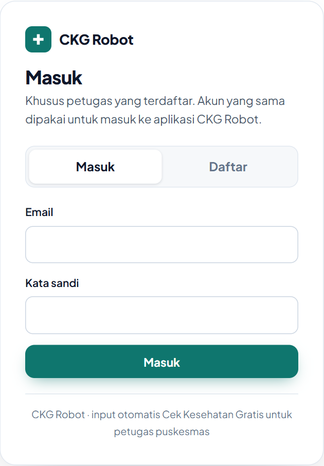
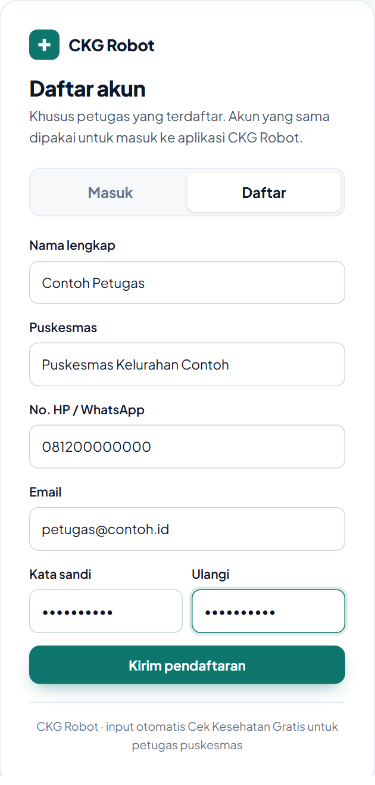
Sesudah mendaftar, muncul layar "Menunggu persetujuan". Kabari admin CKG Robot bahwa kamu sudah mendaftar. Setelah disetujui, tekan Periksa lagi atau buka websitenya lagi.
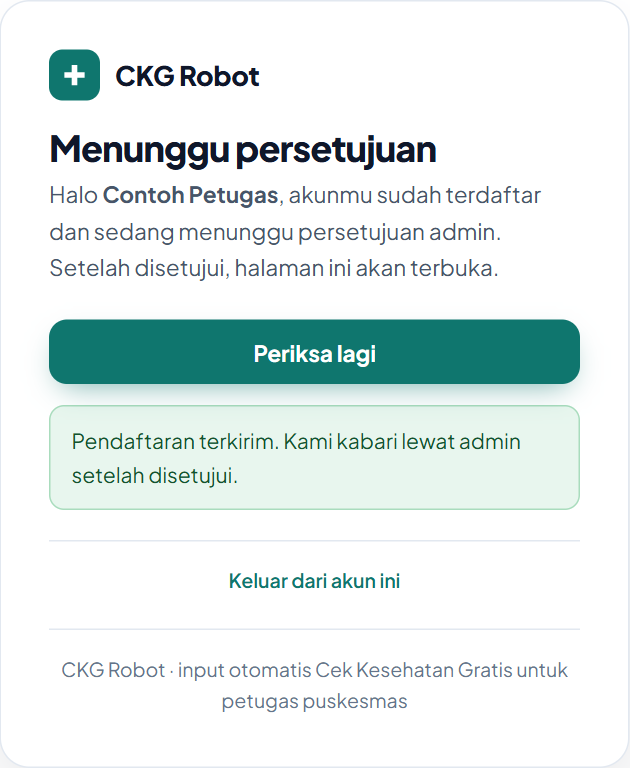
Website terbuka. Di sana ada:
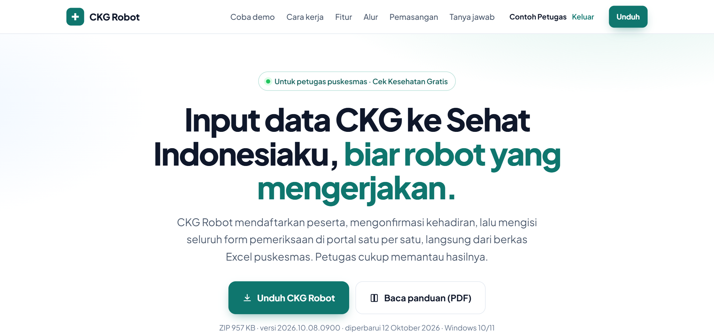
CKG-Robot-Setup.exeKlik ganda berkas yang diunduh dari website (biasanya di folder Downloads). Tidak perlu izin administrator.
Windows mungkin menampilkan layar biru "Windows protected your PC". Klik More info, lalu Run anyway.
Ilustrasi peringatan Windows. Tombol Run anyway baru muncul setelah More info diklik.
Ilustrasi layar pertama Setup
Setelah Pasang ditekan, berkas disalin, lalu sebuah jendela hitam mengunduh pustaka dan browser robot. Butuh internet, sekitar 2–5 menit. Jendela itu menutup sendiri bila selesai. Jangan ditutup.
Di layar terakhir Setup, biarkan Buka CKG Robot sekarang tercentang, lalu klik Selesai.
data\,
hasil\, dan template\.Aplikasi dipasang di C:\Users\<nama>\AppData\Local\CKG Robot. Menghapusnya lewat
Settings → Apps → CKG Robot → Uninstall; folder data\, hasil\, dan pengaturan tidak ikut terhapus.
data\ dan hasil\ yang terpisah.Robot bekerja dari berkas CSV di folder data\. Ada dua cara menyiapkannya.
Di halaman aplikasi (lihat bagian E), buka kartu "1 Siapkan data dari Excel" di paling atas. Pilih
berkas Excel dari mana saja, atau seret ke kotak bergaris. Lalu tekan Ubah jadi CSV.
Hasilnya langsung masuk ke data\ dan bisa dipilih.
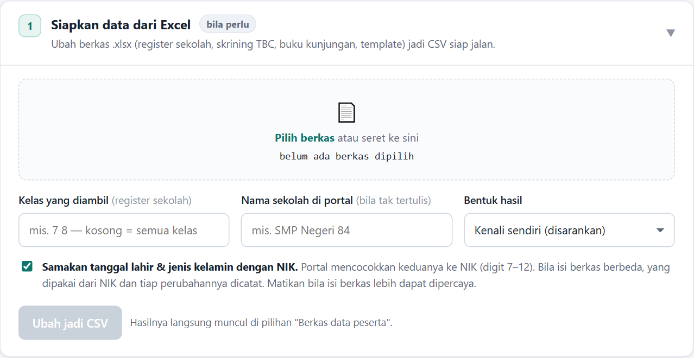
Bentuk yang dikenali sendiri: register kesehatan sekolah (lembar KELAS 1, KELAS 2, …), skrining TBC, buku kunjungan, berkas berformat template, dan bentuk bebas yang judul kolomnya jelas. Lembar bernama Laporan, Rekap, atau Perlu Dicek dilewati.
7 8. Kosong berarti semua kelas.Buka folder template\ dan pilih yang sesuai:
| Template | Untuk |
|---|---|
Template CKG SEKOLAH.xlsx | Murid SD sampai SMA |
Template DEWASA-LANSIA (parameter).xlsx | Dewasa/lansia, hasil ukur ditulis Normal/Rendah/Tinggi |
Template DEWASA-LANSIA (real data).xlsx | Dewasa/lansia, hasil ukur berupa angka |
Template CKG BALITA.xlsx | Balita 0–6 tahun yang punya NIK |
Template CKG BALITA TANPA NIK.xlsx | Bayi yang NIK-nya belum terbit (pakai data wali) |
Isi di Excel, lalu masukkan lewat cara 1 di atas. Bisa juga File → Save As → CSV UTF-8 dan
simpan ke folder data\.
SMP Al-Khairiyah I, Kelas 7.Halaman aplikasi muncul sendiri di browser. Jendela hitam aplikasi mengecil sendiri ke taskbar. Kalau
halaman tidak terbuka, ketik localhost:8765 di browser.
Masuk dengan email dan kata sandi akun CKG Robot (bagian B), bukan akun portal.
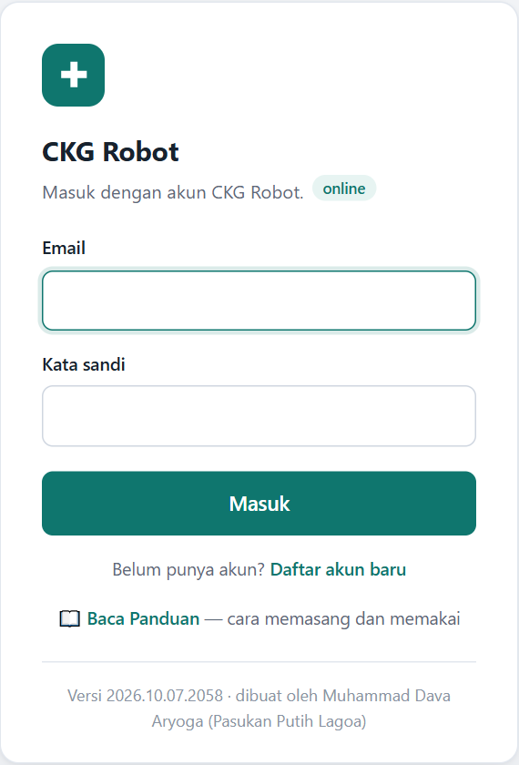
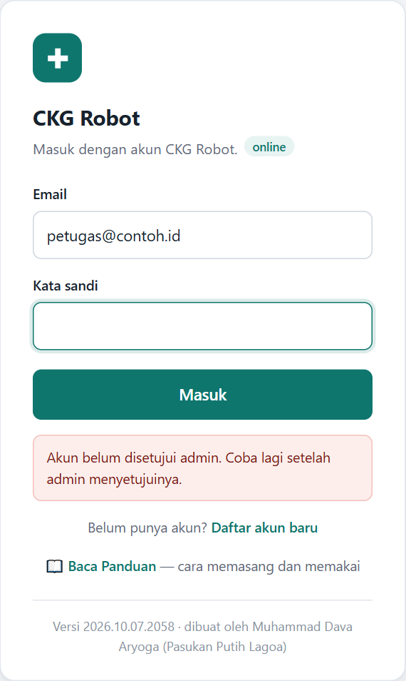
Masuk membutuhkan internet, karena akunnya diperiksa ke server. Pesan bila ditolak dijelaskan di bagian I.
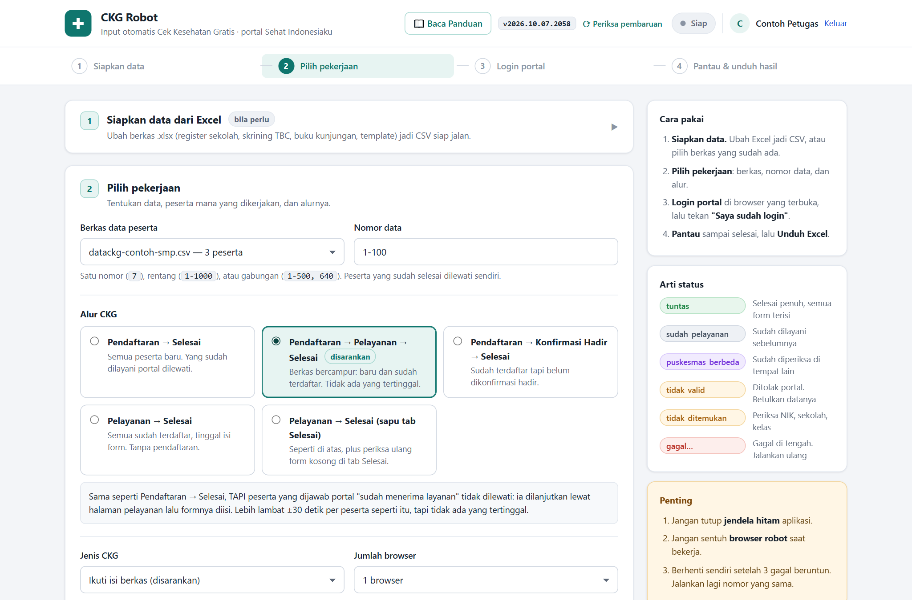
| Isian | Isi dengan |
|---|---|
| Berkas data peserta | Berkas CSV di folder data\. Jumlah pesertanya tertulis di sebelahnya. |
| Nomor data | Baris yang dikerjakan: 7, 1-1000, atau 1-500, 640. Awalnya terisi 1-100. Sekali jalan boleh sampai ratusan peserta (sudah diuji 1000). |
| Alur CKG | Klik salah satu kartu alur. Penjelasannya ada di tabel berikut. |
| Jenis CKG | Biarkan "Ikuti isi berkas (disarankan)". |
| Jumlah browser | 1 browser. Naikkan hanya bila punya beberapa akun portal yang berbeda (lihat bagian G). |
Memilih alur:
| Alur | Pakai bila |
|---|---|
| Pendaftaran → Selesai | Semua peserta baru. Didaftarkan, dimulai pemeriksaannya, lalu semua form diisi. Yang dijawab portal "sudah menerima layanan" dilewati. Paling cepat. |
| Pendaftaran → Pelayanan → Selesai | Berkas bercampur: sebagian belum terdaftar, sebagian sudah terdaftar tapi formnya belum diisi. Yang "sudah menerima layanan" dilanjutkan lewat halaman pelayanan. |
| Pendaftaran → Konfirmasi Hadir → Selesai | Peserta sudah terdaftar tapi belum dikonfirmasi hadir. Dicari di daftar pendaftaran, dikonfirmasi hadir, lalu formnya diisi. |
| Pelayanan → Selesai | Semua peserta sudah terdaftar, tinggal diisi formnya. Yang sudah ada di tab "Selesai Pemeriksaan" dilewati. |
| Pelayanan → Selesai (sapu tab Selesai) | Seperti di atas, tapi peserta di tab "Selesai Pemeriksaan" ikut dibuka, lalu form yang masih kosong diisi. |
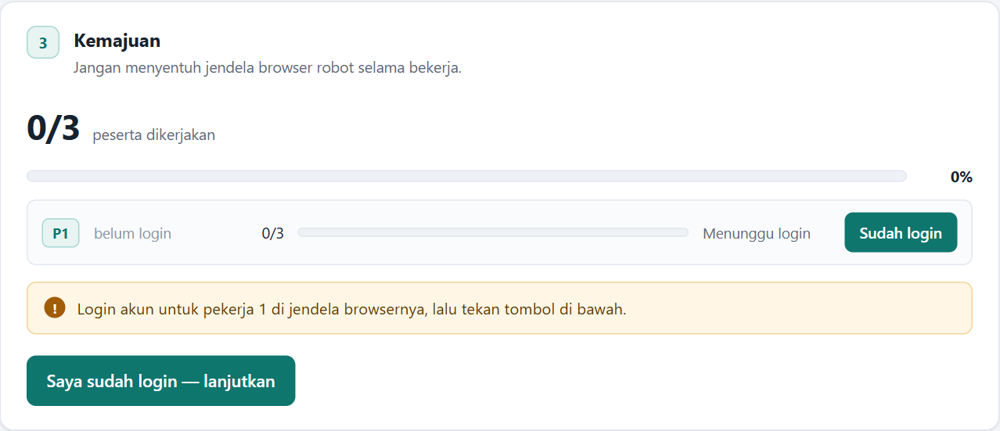
Sesi login portal tersimpan, jadi biasanya tidak perlu login lagi setiap kali, hanya saat sesinya habis.
Kartu Kemajuan menunjukkan jumlah peserta yang sudah dikerjakan. Satu peserta penuh butuh sekitar 3–4 menit. Catatan proses lengkap ada di kartu 5 Catatan proses di bawahnya.
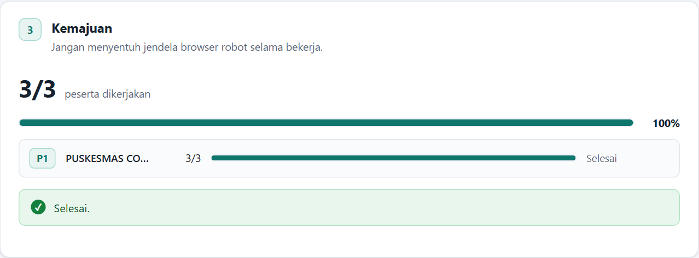
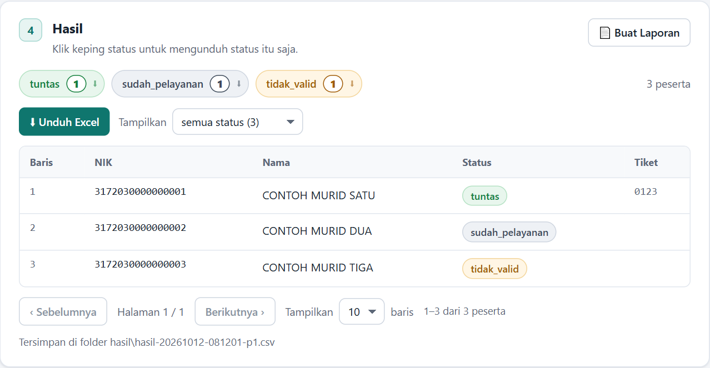
hasil\.hasil\ tetap aman.| Status | Artinya | Diulang? |
|---|---|---|
| tuntas | Selesai penuh, semua form terisi | Tidak |
| sudah_pelayanan | Portal menyatakan peserta sudah dilayani | Tidak |
| ckg_sekolah ckg_umum | Sudah diperiksa lewat jalur CKG yang lain | Tidak |
| puskesmas_berbeda | Sudah diperiksa puskesmas lain (nama dan tanggalnya di keterangan) | Tidak |
| sekolah_berbeda kelas_berbeda | Murid tercatat di sekolah atau kelas lain. Betulkan datanya | Tidak |
| tidak_valid | Portal menolak datanya (biasanya NIK, nama, atau tanggal lahir salah) | Tidak, betulkan dulu |
| tidak_ditemukan | Tidak ada di daftar. Periksa NIK, sekolah, atau kelas | Ya |
| gagal… tanpa_tiket | Langkahnya gagal, sering karena portal lambat | Ya |
| layanan_sebagian | Sebagian form belum terisi | Ya |
Tangkapan layar setiap kegagalan tersimpan di hasil\gagal\.
ulang tidak valid = ya di pengaturan.txt.Versi yang sedang dipakai tertulis di kanan atas aplikasi, mis. v2026.10.07.2058. Saat admin
menerbitkan versi baru, aplikasi memberi tahu sendiri. Tidak perlu mengunduh ZIP lagi.
Muncul di atas halaman setelah masuk, berisi nomor versi baru dan catatan perubahannya.
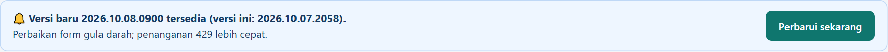
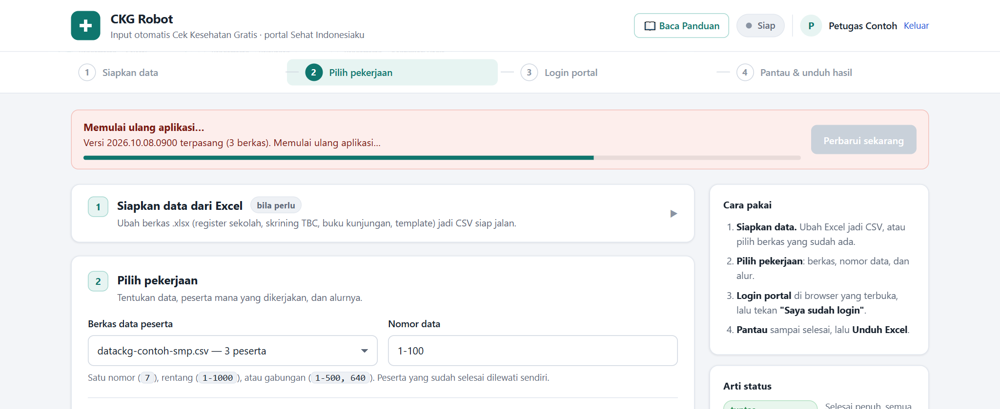
data\, hasil\, mentah\,
pengaturan.txt, dan sesi login portal tetap seperti semula. Kalau pembaruan gagal di tengah,
aplikasi otomatis kembali ke versi lama dan tetap bisa dipakai.Memeriksa versi baru tanpa keluar-masuk. Hasilnya tampil di tombol itu sendiri: ✓ Sudah versi terbaru, atau 🔔 Ada versi baru dan pitanya langsung muncul. Aplikasi juga memeriksa sendiri tiap jam selama tidak sedang bekerja.
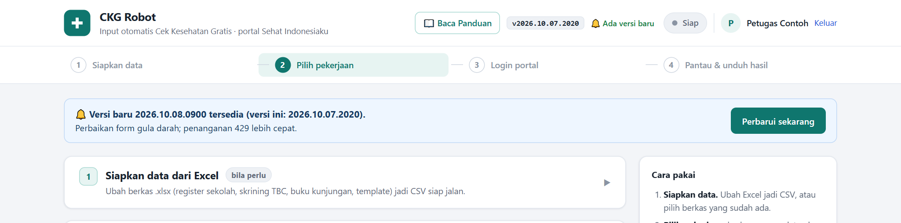
Kalau admin mewajibkan versi tertentu, pita berwarna merah. Aplikasi tetap bisa dibuka, tetapi pekerjaan tidak bisa dimulai sebelum diperbarui. Tekan Perbarui sekarang.
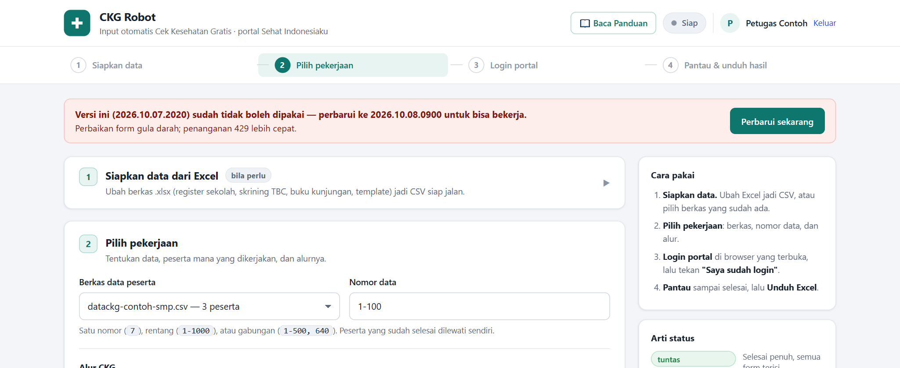
data\
dan hasil\ dari folder lama ke folder baru (Start Menu → CKG Robot - folder data).
Sesudah itu semua pembaruan lewat tombol.| Yang terjadi | Lakukan |
|---|---|
| "Akun belum disetujui admin" | Kabari admin. Setelah disetujui, masuk lagi. |
| "Email atau kata sandi salah" | Periksa ketikan. Lupa kata sandi: minta admin menggantinya. |
| "Akun ini dinonaktifkan admin" | Hubungi admin. |
| "Akun ini sudah dipakai di 2 komputer" | Minta admin melepas komputer lama dari akunmu. |
| "Tidak bisa menghubungi server login" | Periksa internet komputer, lalu coba lagi. |
| "Server login tidak menjawab… mungkin sedang di-pause" | Hubungi admin (server akun perlu dinyalakan lagi). |
| "Versi ini sudah tidak boleh dipakai" | Tekan Perbarui sekarang di pita merah (bagian H). |
| "Pembaruan gagal — aplikasi tetap di versi lama" | Periksa internet, tekan Coba lagi. Bila tetap gagal, laporkan pesannya ke admin. |
| "Windows protected your PC" saat membuka Setup | Klik More info, lalu Run anyway (bagian C). |
| "Pustaka gagal dipasang" | Internet terputus saat pemasangan. Periksa internet, lalu klik ikon CKG Robot lagi. |
| "Python tidak ditemukan" (versi ZIP lama) | Pasang Setup dari website. Python sudah termasuk. |
| Ikon CKG Robot di Desktop terhapus | Buka dari Start Menu (ketik CKG Robot), atau pasang ulang Setup. Data tidak hilang. |
| Halaman aplikasi tidak terbuka sendiri | Buka browser, ketik localhost:8765. |
| "Aplikasi sudah berjalan dan memakai port 8765" | CKG Robot masih terbuka (jendela hitam di taskbar). Halamannya dibukakan lagi; pakai yang itu. Setelah pembaruan manual: tutup jendela lama, lalu klik ikon lagi. |
| "Terlalu banyak percobaan" | Salah kata sandi 5 kali. Tunggu 5 menit. |
| Diminta login portal terus | Jangan tutup jendela browser robot di tengah batch. |
| Berkas tidak muncul di "Berkas data peserta" | Pastikan berbentuk .csv dan ada di folder data\ (Start Menu → CKG Robot - folder data), lalu muat ulang halaman. |
| Banyak tidak_ditemukan (sekolah) | Cocokkan nama sekolah dan kelas dengan tulisan di portal, huruf demi huruf. |
| Banyak tidak_valid | Periksa NIK: 16 digit, tidak terpotong Excel, tanggal lahir cocok. |
| Batch berhenti sendiri | Normal setelah 3 gagal beruntun. Tutup browser, jalankan lagi dengan nomor data yang sama. |
hasil\gagal\, dan isi kartu
"Catatan proses". Dengan itu sebabnya bisa dilihat tanpa menebak.Akun berperan admin melihat tombol 👥 Kelola Petugas di kanan atas aplikasi.
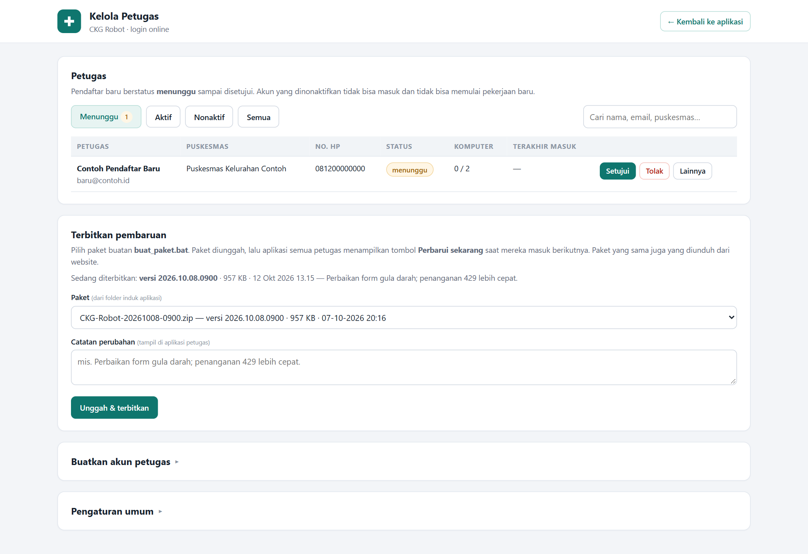
| Keperluan | Caranya |
|---|---|
| Menyetujui pendaftar | Tab Menunggu → Setujui (atau Tolak). |
| Menghentikan akun | Nonaktifkan. Akun tidak bisa masuk dan tidak bisa memulai pekerjaan baru. |
| Membuatkan akun | Kartu Buatkan akun petugas. Akunnya langsung aktif; beri tahu email dan kata sandinya. |
| Mengubah data petugas | Lainnya → ✎ Ubah data petugas: nama, puskesmas, no. HP, email. Email baru langsung dipakai untuk masuk (sandi tetap). |
| Petugas lupa kata sandi | Lainnya → Ganti kata sandi. |
| Ganti laptop / batas komputer | Lainnya → Lepas komputer lama, atau ubah Batas komputer untuk akun itu. |
| Menjadikan admin | Lainnya → Jadikan admin. |
| Pengumuman untuk semua | Kartu Pengaturan umum → isi Pengumuman. Sampai ke semua petugas dalam ±2 menit, juga yang sedang menjalankan robot (kotak + notifikasi Windows, sekali per isi baru). Kosongkan untuk menghapus. |
buat_paket.bat dan jawab t (tanpa data peserta).
Nomor versinya dicap otomatis. ZIP dan CKG-Robot-Setup-<tanggal>.exe muncul di folder induk
(Setup dibuat bila Inno Setup 6 terpasang di komputer admin).